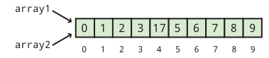
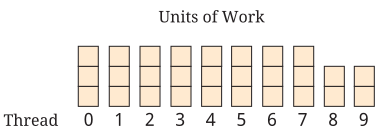

Capítulo 6. Arrays
O excesso de algo bom pode ser maravilhoso.
6.1. Introdução
Com uma exceção, todos os tipos sobre os quais falamos neste livro
armazenam um único valor. Por exemplo, uma variável int só pode
conter um único valor int. Se você tentar inserir um segundo valor int
numa variável, ele substituirá o primeiro.
O tipo String, é claro, é a exceção. Objetos String podem
conter sequências char de qualquer comprimento, de 0 até um tamanho praticamente
ilimitado (o comprimento máximo teórico de um String em Java é
Integer.MAX_INT, mais de 650 vezes o comprimento de Guerra e Paz).
Por mais notáveis que sejam os objetos String, este capítulo trata de um tipo mais
geral de lista chamado array. Podemos criar arrays para armazenar uma
lista de qualquer tipo de variável em Java.
A capacidade de trabalhar com listas amplia o escopo dos problemas que podemos resolver. Além de listas simples, podemos usar as mesmas ferramentas para criar tabelas, grades e outras estruturas para resolver problemas fascinantes como o que vem a seguir.
6.2. Problema: Jogo da Vida
Alguns físicos insistem que as regras que regem o universo são terrivelmente complicadas. Outros insistem que as leis fundamentais são simples e que apenas a interação global entre elas é complexa. Com a capacidade de realizar simulações rapidamente, os cientistas da computação demonstraram que alguns sistemas podem apresentar interações muito complexas utilizando regras simples. Talvez os exemplos mais conhecidos desses sistemas sejam os autômatos celulares, dos quais o Jogo da Vida de Conway é o mais famoso.
A estrutura do Jogo da Vida de Conway é uma grade infinita composta por quadrados chamados células. Algumas células na grade são pretas (ou vivas, para dar um toque biológico), e o restante é branco (ou morto). Qualquer célula tem 8 vizinhas, conforme mostrado na figura abaixo.

O padrão de células vivas e mortas em um determinado momento na grade é chamado de geração. Para determinar a próxima geração, usamos as seguintes regras.
-
Se uma célula viva tiver menos de dois vizinhos vivos, ela morre de solidão.
-
Se uma célula viva tiver mais de três vizinhos, ela morre por causa da superlotação.
-
Se uma célula viva tiver exatamente dois ou três vizinhos vivos, ela sobrevive até a próxima geração.
-
Se uma célula morta tiver exatamente três vizinhas vivas, ela se torna uma célula viva.
Essas quatro regras simples permitem interações mais complexas do que você poderia imaginar. Os padrões que surgem da aplicação dessas regras a uma configuração inicial de células vivas e mortas estabelecem um equilíbrio entre o caos total e a ordem rígida. Como o nome do jogo sugere, a semelhança com padrões biológicos de desenvolvimento pode ser surpreendente.
Sua tarefa é criar um simulador de Life de tamanho n × m, cujos valores específicos serão discutidos a seguir. O programa deve simular o processo a uma velocidade que seja envolvente de se assistir, com uma nova geração a cada décimo de segundo. O programa deve começar tornando aleatoriamente 10% de todas as células vivas e o restante morto.
6.2.1. Limitações do terminal
Um problema que talvez esteja te preocupando é como exibir a
simulação. Em Capítulo 16, você aprenderá a criar uma interface gráfica de usuário (GUI)
capaz de exibir uma grade de células em preto e branco e muitas outras
coisas interessantes também. Por enquanto, a principal ferramenta que podemos usar para
saída ainda é o terminal. O método de saída que recomendamos é imprimir
um asterisco ('*') para uma célula viva e um espaço (' ') para uma
morta. Dessa forma, você pode ver facilmente os padrões se formando na tela e
mudando com o tempo.
O terminal clássico não é muito grande. Por esse motivo, sugerimos que você defina a altura da sua simulação para 24 linhas e a largura da sua simulação para 80 colunas. Essas dimensões estão em conformidade com os tamanhos mais antigos de terminais. Se a tela do seu terminal for muito maior, você pode alterar a largura e a altura posteriormente para realizar uma simulação maior. Não importa o quão grande seja a tela do jogo, o tamanho ideal do jogo. Como nosso tamanho é tão limitado, precisamos lidar com o problema de uma célula na borda. Qualquer coisa além dos limites deve ser considerada morta. Assim, uma célula bem na borda da grade de simulação pode ter no máximo 5 vizinhos. Uma célula em um dos quatro cantos pode ter apenas 3 vizinhos.
Para dar a aparência de transições suaves, você precisa imprimir cada nova geração de células rapidamente e nos mesmos locais que a geração anterior. Simplesmente imprimir um conjunto após o outro não alcançará esse efeito, a menos que a tela do seu terminal tenha exatamente 24 linhas de altura. Portanto, você precisará limpar a tela a cada vez. Em um esforço para ser independente de plataforma, o Java não oferece uma maneira fácil de limpar a tela do terminal. Um truque rápido e simples é simplesmente imprimir 100 linhas em branco antes de imprimir a próxima geração. Esse truque funcionará desde que a altura do seu terminal não seja significativamente superior a 100 linhas. Se for, você precisará imprimir um número maior de linhas em branco.
Por fim, você precisa esperar um breve intervalo de tempo entre as gerações para que o usuário possa ver cada configuração antes que ela seja apagada e substituída pela próxima. A maneira mais simples de fazer isso é fazer com que seu programa entre em espera por um breve período de tempo, um décimo de segundo, como sugerimos anteriormente. O código para fazer seu programa entrar em espera por esse período de tempo é:
--- -
try { Thread.sleep(100);
} catch (InterruptedException e) {}
----Explicaremos esse código com muito mais detalhes em Capítulo 14.
O item-chave de importância é o número passado para o método sleep().
Esse valor é o número de milissegundos que você deseja que seu programa fique em espera.
100 milissegundos são, obviamente, um décimo de segundo.
Para simular o Jogo da Vida, precisamos armazenar informações, ou seja, se as células estão vivas ou mortas, em uma grade. Primeiro, precisamos discutir a tarefa mais simples de armazenar dados em uma lista.
6.3. Conceitos: Listas de dados
As listas de dados são de suma importância em muitas áreas diferentes da vida: listas de compras, listas de itens a levar, listas de funcionários que trabalham em uma empresa, agendas de endereços, listas dos dez melhores e muito mais. As listas são ainda mais importantes na programação. Como você sabe, um dos grandes pontos fortes dos computadores é a velocidade. Se tivermos uma longa lista de dados, podemos usar essa velocidade para realizar operações em todos os dados rapidamente. Listas de contatos de e-mail , entradas em um banco de dados e células em uma planilha são apenas algumas das formas mais óbvias como as listas aparecem em aplicativos de computador.
Mesmo em Java, há muitas maneiras diferentes de registrar uma lista de informações, mas uma lista é apenas uma forma de estrutura de dados. Como o nome indica, uma estrutura de dados é uma maneira de organizar dados, seja em uma lista, em uma árvore, em ordem classificada, em algum tipo de hierarquia ou de qualquer outra forma que possa ser útil. Neste capítulo, falaremos apenas sobre a estrutura de dados de matriz, mas outras estruturas de dados serão discutidas em Capítulo 19. Abaixo, apresentamos uma breve explicação de alguns dos atributos que qualquer estrutura de dados pode ter.
6.3.1. Atributo da estrutura de dados
- Conteúdo
-
Manter apenas um único valor em uma estrutura de dados vai contra o propósito de uma estrutura de dados. Mas, se podemos armazenar mais de um valor, será que todos esses valores devem ser do mesmo tipo? Se uma estrutura de dados pode conter vários tipos diferentes de dados, chamamos-na de heterogênea, mas se ela puder conter apenas um tipo, chamamos-na de homogênea.
- Tamanho
-
O tamanho de uma estrutura de dados pode ser algo fixo no momento em que é criada ou pode mudar dinamicamente. Se o tamanho ou comprimento de uma estrutura de dados pode mudar, chamamos-a de estrutura de dados dinâmica. Se a estrutura de dados tem um tamanho ou comprimento que nunca pode mudar após ter sido criada, chamamos-a de estrutura de dados estática.
- Acesso a Elementos
-
Uma das razões pelas quais existem tantas estruturas de dados diferentes é que diferentes formas de estruturar dados são melhores ou piores para uma determinada tarefa. Por exemplo, se sua tarefa for adicionar uma lista de números, então você espera acessar cada elemento da lista. No entanto, se você estiver procurando uma palavra em um dicionário, não vai querer verificar todas as entradas do dicionário para encontrá-la.
Algumas estruturas de dados são otimizadas para que você possa ler, inserir ou excluir com eficiência apenas um único item, geralmente o primeiro (ou último) item na estrutura de dados. Algumas estruturas de dados permitem apenas que você se desloque pela estrutura sequencialmente, um item após o outro. Tal estrutura de dados possui o que se chama de acesso sequencial. Outras ainda permitem que você salte aleatoriamente para qualquer ponto que desejar dentro da estrutura de dados de forma eficiente. Essas estruturas de dados possuem o que se chama de acesso aleatório. Programadores avançados levam em consideração muitos fatores diferentes antes de decidir qual estrutura de dados é mais adequada para o seu problema.
6.3.2. Características de um vetor
Agora que definimos esses atributos, podemos dizer que um vetor é uma
estrutura de dados homogênea e estática com acesso aleatório. Um vetor é
homogêneo porque só pode conter uma lista de um único tipo de dados,
como int, double ou String. Um vetor é estático porque tem
um comprimento fixo que é definido apenas quando o vetor é instanciado.
Um array
também possui acesso aleatório porque saltar para qualquer elemento no array é
rápido e leva aproximadamente o mesmo tempo que saltar para qualquer
outro.
Um array é uma lista de um tipo específico de elementos que tem comprimento n, um comprimento especificado quando o array é criado. Cada um dos n elementos é indexado usando um número entre 0 e n - 1]. Mais uma vez, a contagem baseada em zero mostra sua face feia . Considere a seguinte lista de itens: {9, 4, 2, 1, 6, 8, 3}
Se essa lista for armazenada em um array, o primeiro elemento, 9, teria o índice 0, 4 teria o índice 1, e assim por diante, terminando em 3 com um índice de 6, embora o número total de itens seja 7. Nem todas as linguagens usam contagem baseada em zero para índices de vetor , mas muitas o fazem, incluindo C, C++ e Java. A razão pela qual linguagens como C originalmente usavam contagem baseada em zero para índices é que a variável correspondente ao vetor é um endereço dentro da memória do computador que aponta para o primeiro elemento da vetor. Assim, um índice de 0 é 0 vezes o tamanho de um elemento somado ao endereço inicial, e um índice de 5 é 5 vezes o tamanho de um elemento somado ao endereço inicial. Portanto, os índices baseados em zero proporcionavam uma maneira rápida para o programa calcular em que ponto da memória um determinado elemento de um array se encontrava.
6.4. Sintaxe: Arrays em Java
O conceito de lista não é nada misterioso. Numerar cada elemento da lista é algo natural, mesmo que a numeração comece no 0 em vez de no 1. No entanto, os arrays são a fonte de muitos erros que fazem com que os programas Java travem. Abaixo, explicamos os fundamentos da criação de arrays, indexação em arrays e uso de arrays com laços. Em seguida, há uma subseção extra explicando como enviar dados de um arquivo para um programa como se o arquivo estivesse sendo digitado por um usuário. Usar essa técnica pode economizar muito tempo quando você estiver experimentando com arrays.
6.4.1. Declaração e instanciação de um array
Para criar um array, geralmente é necessário criar primeiro uma variável de array.
Lembre-se de que um array é uma estrutura de dados homogênea, o que significa que ele
só pode armazenar elementos de um único tipo. Ao criar uma variável de array
, você precisa especificar qual é esse tipo. Para declarar uma variável de
array, use o tipo que ela irá conter, seguido de colchetes
([]), seguido do nome da variável. Por exemplo, se
você quiser criar um array chamado numbers que possa conter inteiros, você
digitaria o seguinte.
int[] numbers;Se você tem alguma experiência em programação em C ou C++, talvez esteja acostumado a ver os colchetes do outro lado da variável, assim.
int numbers[];Em Java, ambas as declarações são perfeitamente válidas e equivalentes. No entanto,
a primeira declaração é preferível do ponto de vista estilístico. Ela
segue o padrão de usar o tipo (um array de valores int, neste
caso) seguido pelo nome da variável como sintaxe para uma declaração.
Como dissemos, os arrays também são estruturas de dados estáticas, o que significa que seu
comprimento é fixado no momento da criação. No entanto, não especificamos um
comprimento acima. Essa declaração ainda não criou um array, apenas uma
variável que pode apontar para um array. Na segunda metade deste capítulo,
discutiremos mais detalhadamente essa diferença entre a maneira como um array é
criado e a maneira como um int ou qualquer outra variável de tipo primitivo é
criada. Para realmente criar o array, precisamos usar outra etapa,
envolvendo a palavra-chave new. Veja como instanciamos uma matriz do tipo
int com 10 elementos.
numbers = new int[10];
Usamos a palavra-chave new, seguida do tipo de elemento, seguida
do número de elementos que o array pode conter entre colchetes. Esse novo
array é armazenado em numbers. Em outras palavras, a variável numbers
é agora um nome para o array. Normalmente, as duas etapas de declarar e
instanciar um array serão combinadas em uma única linha de código.
int[] numbers = new int[10];É sempre possível separar as duas etapas. Em alguns casos, uma única variável pode ser usada para apontar para um array de um comprimento específico, depois alterada para apontar para um array de outro comprimento, e assim por diante, como mostrado abaixo.
int[] numbers;
numbers = new int[10];
numbers = new int[100];
numbers = new int[1000];Aqui, a variável numbers começa sem apontar para nenhum array. Em seguida, ela é
configurada para apontar para um novo array com 10 elementos. Depois, ela é configurada para
apontar para um novo array com 100 elementos, ignorando o array de 10 elementos.
Por fim, ela é configurada para apontar para um array com 1.000 elementos, ignorando
o array de 100 elementos. Lembre-se de que os próprios arrays são estáticos; seus
comprimentos não podem mudar. As variáveis do tipo array, no entanto, podem apontar para
diferentes arrays com comprimentos diferentes, desde que ainda sejam
do tipo correto (neste caso, arrays de valores int).
Quais valores estão dentro do array quando ele é criado pela primeira vez? Vamos voltar
ao caso em que numbers aponta para um novo array com 10 elementos. Cada
um desses elementos contém o valor int 0, conforme mostrado abaixo.
Elementos do array mostrando valores de índice. image::array.svg[scaledwidth=75%,pdfwidth=75%,width=75%,align=“center”]
Sempre que um array é instanciado, cada um de seus n elementos
é definido com algum valor padrão. Para int, long, short e byte
esse valor é 0. Para double e float, esse valor é 0.0. Para
char, esse valor é ‘\0’, um caractere especial não imprimível. Para
boolean, esse valor é false. Para String ou qualquer outro tipo de referência
, esse valor é null, um valor especial que significa que não há
objeto.
Também é possível usar uma lista para inicializar um array. Por exemplo,
podemos criar um array do tipo double que contenha os valores 0.5,
1.0, 1.5, 2.0 e 2.5 usando o código a seguir.
double[] increments = {0.5, 1.0, 1.5, 2.0, 2.5};Esta linha de código é equivalente a usar a palavra-chave new para criar um
vetor double com 5 elementos e, em seguida, definir cada um com os valores
mostrados.
6.4.2. Acessando índices em arrays
Para usar um valor em um array, você deve acessar o índice do array, utilizando
novamente os colchetes. Voltando ao exemplo do array int
numbers com comprimento 10, podemos ler o valor no índice 4 do
array e exibi-lo.
System.out.println(numbers[4]);Até que algum outro valor seja armazenado ali, o valor de numbers[4] é 0,
e, portanto, 0 é tudo o que será impresso.
Podemos definir o valor em numbers[4] como 17 da seguinte maneira.
numbers[4] = 17;Então, se tentarmos imprimir numbers[4], 17 será impresso. O
conteúdo do array numbers ficará assim.

O ponto-chave a entender sobre a indexação em um array é que ela
fornece um elemento do tipo especificado. Em outras palavras, numbers[4]
é uma variável int em todos os sentidos possíveis. Você pode ler seu valor.
Você pode alterar seu valor. Você pode passá-lo para um método. Ele pode ser usado
em qualquer lugar onde um int normal possa ser usado, como no exemplo a seguir.
int x = numbers[4];
double y = Math.sqrt(numbers[2]) + numbers[4];
numbers[9] = (int)(y*x);A execução deste código armazenará 17 em x e 17.0 em y. Em seguida,
o produto desses dois, 289, será armazenado em numbers[9].
Lembre-se: em Java, o tipo à esquerda e o tipo à direita do
operador de atribuição (=) devem coincidir, exceto em casos de conversão automática
, como armazenar um valor int em uma variável double. Como
eles têm o mesmo tipo, faz sentido armazenar um elemento de uma matriz int
como numbers[4] em uma variável int como x. No entanto, um
array de valores int não pode ser armazenada em um tipo int.
int z = numbers;Este código causará um erro de compilação. O que isso significa? Você não pode colocar uma lista de variáveis em uma única variável. E o inverso também é verdadeiro .
numbers = 31;Este código também causará um erro de compilação. Um único valor não pode ser armazenado em uma lista inteira. Você teria que especificar um índice onde ele possa ser armazenado. Além disso, você deve ter cuidado para especificar um índice válido. Nenhum índice negativo será válido, nem um índice maior ou igual ao número de elementos na matriz.
numbers[10] = 99;Este código será compilado corretamente. Se você se lembra, instanciamos o
array para o qual numbers aponta para ter 10 elementos, numerados de 0 a
9. Assim, estamos tentando armazenar 99 no elemento que está um índice
depois do último elemento válido. Como resultado, o Java causará um erro
chamado ArrayIndexOutOfBoundsException, o que fará com que
seu programa trave.
6.4.3. Usando laços com arrays
Uma razão para usar arrays é evitar declarar 10 variáveis separadas
apenas para ter 10 valores int com os quais trabalhar. Mas, uma vez que você tenha o array,
muitas vezes precisará de uma maneira automatizada de processá-lo. Qualquer um dos três
tipos de laços oferece uma ferramenta poderosa para realizar operações em um
array, mas o laço for é especialmente adequado para isso. Aqui está um
exemplo de um laço for que define os valores em um array para seus
índices.
int[] values = new int[100];
for (int i = 0; i < 100; ++i) {
values[i] = i;
}Este exemplo de código mostra como é fácil iterar sobre todos os elementos
de um array com um laço for, no entanto, ele apresenta uma falha de estilo. Observe que
o número 100 é usado duas vezes: uma vez na instanciação do array
e uma segunda vez na condição de terminação do laço for. Este
fragmento de código funciona bem, mas se o programador alterar o comprimento de
values para 50 ou 500, os limites do laço for também
precisarão ser alterados. Além disso, o comprimento do array pode ser determinado
pela entrada do usuário.
Para tornar o código mais robusto e legível, podemos usar o campo length
do array values como limite do laço for.
int[] values = new int[100];
for (int i = 0; i < values.length; ++i) {
values[i] = i;
}O campo length fornece o comprimento do array que values aponta
. Se o programador quiser instanciar o array com um comprimento diferente
, tudo bem. O campo length sempre refletirá o
valor correto. Sempre que possível, use o campo length dos arrays em seu código.
Observe que o campo length é somente leitura. Se você tentar definir
values.length com um valor específico, seu código não será compilado.
Definir os valores em um array é apenas uma das tarefas possíveis que você pode realizar
com um laço. Vamos supor que um array do tipo double chamado data
tenha sido declarado, instanciado e preenchido com a entrada do usuário. Poderíamos
somar todos os seus elementos usando o código a seguir. Uma maneira mais elegante de fazer
a mesma soma é discutida em [Laços for aprimorados].
double sum = 0.0;
for (int i = 0; i < data.length; ++i) {
sum += data[i];
}
System.out.println(“A soma dos seus dados é: ” + sum);Até agora, discutimos apenas operações sobre os valores em um array. É
importante perceber que a ordem desses valores pode ser igualmente
importante. Vamos criar um array do tipo char chamado
letters, inicializado com alguns valores, e depois inverter a ordem do
array.
char[] letters = {‘b’, ‘y’, ‘z’, ‘a’, ‘n’, ‘t’, ‘i’, ‘n’, ‘e’}; (1)
int start = 0; (2)
int end = letters.length - 1; (3)
char temp;
while (start < end) { (4)
temp = letters[start]; (5)
letters[start] = letters[end];
letters[end] = temp;
++start; (6)
--end;
}
for (int i = 0; i < letters.length; ++i) { (7)
System.out.print(letters[i]);
}| 1 | Após inicializar o array letters
, declaramos start e end.
start recebe o valor 0, o
primeiro índice de letters.
end recebe o valor letters.length - 1, o último índice válido
de letters.
O laço while continua enquanto
start for menor que end. |
| 2 | As três primeiras linhas de cada
iteração do loop while trocam o char no índice start pelo
char no índice end. |
| 3 | As duas linhas seguintes incrementam e
decrementam start e end, respectivamente. Quando os dois se encontram no
meio, toda o array foi invertido. |
| 4 | O laço for simples no
final imprime cada char em letters, gerando a saída enitnazyb. |
É claro que poderíamos ter impresso os elementos do array na ordem inversa sem alterar sua ordem, mas queríamos invertê-los, talvez porque precisaremos deles invertidos no futuro.
6.4.4. Redirecionando a entrada
Com arrays e loops, podemos processar uma grande quantidade de dados, mas testar programas que processam muitos dados pode ser tedioso. Em vez de digitar os dados no terminal, podemos lê-los a partir de um arquivo. Em Java, a E/S de arquivos é um processo complicado que envolve vários objetos e chamadas de métodos. Vamos falar sobre isso em profundidade em Capítulo 21, mas, por enquanto, podemos usar uma solução alternativa rápida e fácil.
Se você criar um arquivo de texto usando um editor de texto simples, poderá redirecionar
o arquivo como entrada para um programa. Tudo o que você escreveu no arquivo de texto
é tratado como se estivesse sendo digitado na linha de comando por uma
pessoa. Para fazer isso, digite o comando usando java para executar sua classe
normalmente, digite o sinal < e, em seguida, digite o nome do arquivo que você
deseja usar como entrada. Por exemplo, se você tiver um arquivo de texto chamado
numbers.txt que deseja usar como entrada para um programa armazenado em
Summer.class, você poderia fazer isso da seguinte maneira.
java Summer < numbers.txt
Redirecionar a entrada dessa maneira não faz parte do Java. Em vez disso, é um recurso do terminal em execução no seu sistema operacional. Nem todos os sistemas operacionais suportam redirecionamento de entrada, mas praticamente todas as versões do Linux e do Unix suportam, assim como a linha de comando do Windows e o terminal do macOS. Nós poderíamos escrever o programa mencionado acima e atribuir a ele a tarefa simples de somar todos os números que receber como entrada.
import java.util.*;
public class Summer {
public static void main(String[] args) {
Scanner in = new Scanner(System.in);
System.out.print("How many numbers do you want to add? ");
int n = in.nextInt();
int sum = 0;
for (int i = 0; i < n; ++i) {
System.out.print("Enter next number: ");
sum += in.nextInt();
}
System.out.println("The sum of the numbers is " + sum);
}
}Agora, podemos criar um arquivo com uma lista de números e salvá-lo como
numbers.txt. Para estar em conformidade com o programa que escrevemos, devemos também colocar
a contagem total de números como o primeiro valor no arquivo. Você pode colocar
cada número em uma linha separada ou apenas deixar um espaço entre cada um.
Desde que estejam separados por espaços em branco, o objeto Scanner irá
cuidar do resto. Você terá que digitar os números no arquivo
uma vez, mas depois poderá testar seu programa repetidamente com o mesmo arquivo.
Se você executar o programa com o arquivo que criou, perceberá
que o programa ainda solicita uma vez a contagem total de números
e, em seguida, solicita várias vezes que você insira o próximo número. Com
entrada redirecionada, todo esse texto é processado de forma confusa. Toda a
entrada vem de numbers.txt. Se você espera que um programa leia
estritamente a partir da entrada redirecionada, pode projetar seu código de maneira um pouco
diferente. Por um lado, você não precisa de solicitações explícitas para
o usuário. Por outro lado, você pode usar vários métodos especiais da
classe Scanner. A classe Scanner possui vários métodos como
hasNextInt() e hasNextDouble(). Esses métodos examinam a
entrada e verificam se há outro int ou double válido, retornando
true ou false conforme o caso. Se você espera que um arquivo tenha apenas uma longa
sequência de valores int, pode usar hasNextInt() para determinar se
chegou ao fim do arquivo ou não. Usando hasNextInt(), podemos
simplificar o programa e remover a expectativa de que o primeiro número
forneça a contagem total de números.
import java.util.*;
public class QuietSummer {
public static void main(String[] args) {
Scanner in = new Scanner(System.in);
int sum = 0;
while (in.hasNextInt()) {
sum += in.nextInt();
}
System.out.println("The sum of the numbers is " + sum);
}
}Por outro lado, você pode estar interessado na saída de um programa.
A saída pode ser muito longa ou pode levar muito tempo para ser produzida
ou você pode querer armazená-la permanentemente. Para essas situações, é
possível redirecionar a saída também. Em vez de imprimir na
tela, você pode enviar a saída para um arquivo de sua escolha. A sintaxe
para essa operação é igual à sintaxe para redirecionamento de entrada, exceto
que você usa o sinal > em vez de <. Para executar QuietSummer com
entrada de numbers.txt e saída para sum.txt, poderíamos fazer o
seguinte.
java QuietSummer < numbers.txt > sum.txt
Você pode examinar o sum.txt a qualquer momento com o editor de texto
de sua preferência. Ao usar o redirecionamento de saída, faz mais sentido executar
o QuietSummer do que o Summer. Se tivéssemos executado o Summer, toda aquela
saída desnecessária solicitando que o usuário insira números seria salva no
sum.txt.
6.5. Exemplos: uso dos arrays
Aqui estão alguns exemplos de uso prático dos arrays. Vamos discutir algumas técnicas úteis principalmente para pesquisa e classificação. Pesquisar valores em uma lista pode parecer algo rotineiro, mas é uma das tarefas mais práticas que um cientista da computação realiza diariamente. Ao fazer com que um computador faça esse trabalho, poupamos dos seres humanos inúmeras horas de pesquisas e verificações tediosas. Outra tarefa importante é a classificação. Classificar uma lista pode tornar pesquisas futuras mais rápidas e é a maneira mais simples de encontrar a mediana de uma lista de valores. A classificação é uma parte fundamental de inúmeros problemas do mundo real.
Nos exemplos abaixo, discutiremos primeiro como encontrar o maior (ou menor) valor em uma lista, passaremos para a classificação de listas e, em seguida, falaremos sobre uma tarefa que pesquisa palavras, como uma consulta em um dicionário.
Encontrar o maior valor inserido por um usuário não é difícil. Aplicar
esse conhecimento a um array também é bastante simples. Essa
tarefa simples também é um alicerce do algoritmo de classificação que discutiremos
abaixo. A chave para encontrar o maior valor em qualquer lista é
manter uma variável temporária que registre o maior valor encontrado até o momento.
À medida que avançamos, atualizamos a variável se encontrarmos um valor maior. O
único truque é inicializar a variável com algum valor inicial apropriado
. Poderíamos inicializá-la com zero, mas e se toda a lista de
números for negativa? Nesse caso, nossa resposta seria maior do que qualquer um dos
números da lista. Se nossa lista de números for do tipo int, poderíamos
inicializar nossa variável como Integer.MIN_VALUE, o menor
int possível. Essa abordagem funciona, mas você precisa se lembrar do nome da
constante, e isso não melhora a legibilidade do código.
Ao trabalhar com um array, a melhor maneira de encontrar o maior valor na
lista é definindo sua variável temporária como o primeiro elemento
(índice 0) do array. Abaixo está um pequeno trecho de código que encontra
o maior valor em um array int chamado values exatamente dessa maneira.
int maior = valores[0];
for (int i = 1; i < valores.length; ++i) {
if (valores[i] > maior) {
maior = valores[i];
}
}
System.out.println(“O maior valor é ” + maior);Observe que o laço for começa em 1, não em 0. Como largest é
inicializado como values[0], não há motivo para verificar esse valor uma segunda vez.
Fazer isso ainda daria a resposta correta, mas desperdiçaria uma pequena
quantidade de tempo.
Qual é a característica desse código que faz com que ele encontre o maior valor?
A chave é o operador >. Com a alteração de um único caractere,
poderíamos encontrar o menor valor em vez disso.
int menor = valores[0];
for (int i = 1; i < valores.length; ++i) {
if (valores[i] < menor) {
menor = valores[i];
}
}
System.out.println(“O menor valor é ” + smallest);Além da alteração necessária de > para <, também alteramos a
saída e o nome da variável para evitar confusão. Agora, vamos mostrar
como encontrar repetidamente o menor valor em um array pode ser usado para
ordená-lo. Alternativamente, o maior valor poderia ser usado igualmente bem.
A classificação é o pão com manteiga dos cientistas da computação. Muitas pesquisas têm se dedicado a encontrar as maneiras mais rápidas de ordenar uma lista de dados. O resto do mundo presume que ordenar uma lista de dados é trivial porque os cientistas da computação fizeram um excelente trabalho ao resolver esse problema. O nome do algoritmo de ordenação que descreveremos a seguir é ordenação por seleção. Ela não é uma das maneiras mais rápidas de ordenar dados, mas é simples e fácil de entender.
A ideia por trás da ordenação por seleção é encontrar o menor elemento em um
array e colocá-lo no índice 0 do array. Em seguida, a partir dos
elementos restantes, encontrar o menor elemento e colocá-lo no índice 1 do
array. O processo continua, preenchendo o array a partir do início
com os menores valores até que todo o array esteja ordenado. Se o comprimento
do array for n, precisaremos procurar o menor
elemento no array n - 1 vezes. Ao colocar o código que
procura o menor valor dentro de um laço externo, podemos escrever um
programa que faça a ordenação por seleção de valores int inseridos pelo usuário da
seguinte forma. Este programa não é muito longo, mas há muita coisa acontecendo.
import java.util.*;
public class SelectionSort {
public static void main(String[] args) {
Scanner in = new Scanner(System.in);
int n = in.nextInt(); (1)
int[] values = new int[n]; (2)
int smallest;
int temp;
for (int i = 0; i < values.length; ++i) { (3)
values[i] = in.nextInt();
}
for (int i = 0; i < n - 1; ++i) { (4)
smallest = i;
for (int j = i + 1; j < n; ++j) { (5)
if (values[j] < values[smallest]) {
smallest = j; (6)
}
}
temp = values[smallest]; (7)
values[smallest] = values[i];
values[i] = temp;
}
System.out.print("The sorted list is: ");
for (int i = 0; i < values.length; ++i) { (8)
System.out.print(values[i] + " ");
}
}
}| 1 | Após
instanciar um Scanner, lemos o número total de valores que a
lista irá conter. Não podemos confiar no método hasNextInt() para nos dizer
quando parar de ler valores. |
| 2 | Precisamos saber antecipadamente quantos valores vamos armazenar para que possamos instanciar nosso array com o comprimento apropriado. |
| 3 | Em seguida, lemos cada valor no array usando o
primeiro loop for. |
for (int i = 0; i < n - 1; ++i) { (1)
smallest = i;
for (int j = i + 1; j < n; ++j) { (2)
if (values[j] < values[smallest]) {
smallest = j; (3)
}
}
temp = values[smallest]; (4)
values[smallest] = values[i];
values[i] = temp;
}| 1 | O próximo laço for é onde a classificação propriamente dita ocorre. Começamos no índice
0 e, em seguida, tentamos encontrar o menor valor para ser colocado nesse local.
Depois, passamos para o índice 1, e assim por diante, exatamente como descrevemos anteriormente.
Observe que só vamos até n - 2. Não precisamos encontrar o valor a
ser colocado no índice n - 1, porque o restante da lista contém os n - 1
menores números e, portanto, o último número deve já ser o
maior. |
| 2 | Se você observar com atenção, perceberá que o laço interno for
tem a mesma estrutura geral do laço usado para encontrar o menor
valor no exemplo anterior; no entanto, há uma diferença fundamental: |
| 3 | Em vez de armazenar o valor do menor número em smallest, nós
agora armazenamos o índice do menor número. Precisamos armazenar o índice
do menor número para que, na próxima etapa, possamos trocar o
elemento correspondente com o elemento em i, o local no array
que estamos tentando preencher. |
| 4 | As três linhas após o loop for interno são uma
troca simples para fazer exatamente isso. |
import java.util.*;
public class SelectionSort {
public static void main(String[] args) {
Scanner in = new Scanner(System.in);
int n = in.nextInt(); (1)
int[] values = new int[n]; (2)
int smallest;
int temp;
for (int i = 0; i < values.length; ++i) { (3)
values[i] = in.nextInt();
}
for (int i = 0; i < n - 1; ++i) { (4)
smallest = i;
for (int j = i + 1; j < n; ++j) { (5)
if (values[j] < values[smallest]) {
smallest = j; (6)
}
}
temp = values[smallest]; (7)
values[smallest] = values[i];
values[i] = temp;
}
System.out.print("The sorted list is: ");
for (int i = 0; i < values.length; ++i) { (8)
System.out.print(values[i] + " ");
}
}
}| 1 | Depois que toda a classificação estiver concluída, o laço for final imprime a lista recém-
classificada. |
Este programa não solicita nenhuma entrada do usuário, portanto, está bem projetado para redirecionamento de entrada. Se você for criar um arquivo contendo números que deseja classificar com este programa, certifique-se de que o primeiro número seja a contagem total de números no arquivo.
Mais uma vez, este programa ordena a lista em ordem crescente (do menor para o
maior). Se você quisesse ordenar a lista em ordem decrescente,
bastaria alterar o < para um > na comparação do laço interno
for, embora outras alterações sejam recomendadas para facilitar a
legibilidade.
Neste exemplo, lemos uma lista de palavras e uma longa passagem de texto e registramos o número de vezes que cada palavra da lista aparece na passagem. Esse tipo de pesquisa de texto tem muitas aplicações. Ideias semelhantes são usadas em um corretor ortográfico que precisa consultar palavras em um dicionário. As ferramentas de localização e substituição, incrivelmente valiosas nos modernos processadores de texto, utilizam algumas dessas mesmas técnicas.
Para fazer este programa funcionar, no entanto, precisamos ler uma lista (potencialmente longa) de palavras e, em seguida, uma grande quantidade de texto. Somos obrigados a usar redirecionamento de entrada (ou alguma outra forma de entrada de arquivo) porque digitar esse texto várias vezes seria tedioso. Quando chegarmos a Capítulo 21, falaremos sobre maneiras de ler de vários arquivos ao mesmo tempo. No momento, só podemos redirecionar a entrada de um único arquivo e, portanto, somos obrigados a colocar a lista de palavras no início do arquivo, seguida pelo texto que queremos pesquisar.
import java.util.*;
public class WordCount {
public static void main(String[] args) {
Scanner in = new Scanner(System.in);
int n = in.nextInt(); (1)
String[] words = new String[n]; (2)
int[] counts = new int[n]; (3)
String temp;
for (int i = 0; i < words.length; ++i) { (4)
words[i] = in.next().toLowerCase();
}
while (in.hasNext()) { (5)
temp = in.next().toLowerCase();
for (int i = 0; i < n; ++i) { (6)
if (temp.equals(words[i])) {
++counts[i]; (7)
break;
}
}
}
System.out.println("The word counts are: ");
for (int i = 0; i < words.length; ++i) { (8)
System.out.println(words[i] + " " + counts[i]);
}
}
}| 1 | Assim como no último exemplo, este programa começa lendo o comprimento da lista de palavras. |
| 2 | Em seguida, ele instancia o array String words para
armazenar essas palavras. |
| 3 | Ele também instancia um array counts do tipo int
para acompanhar o número de vezes que cada palavra é encontrada. Por padrão,
cada elemento em counts é inicializado como 0. |
| 4 | O primeiro laço for no
programa lê cada palavra e a armazena no array words. |
import java.util.*;
public class WordCount {
public static void main(String[] args) {
Scanner in = new Scanner(System.in);
int n = in.nextInt(); (1)
String[] words = new String[n]; (2)
int[] counts = new int[n]; (3)
String temp;
for (int i = 0; i < words.length; ++i) { (4)
words[i] = in.next().toLowerCase();
}
while (in.hasNext()) { (5)
temp = in.next().toLowerCase();
for (int i = 0; i < n; ++i) { (6)
if (temp.equals(words[i])) {
++counts[i]; (7)
break;
}
}
}
System.out.println("The word counts are: ");
for (int i = 0; i < words.length; ++i) { (8)
System.out.println(words[i] + " " + counts[i]);
}
}
}| 1 | O laço while lê cada palavra do texto que segue a lista e
a armazena em uma variável chamada temp. |
| 2 | Em seguida, ele percorre words
e verifica se temp corresponde a algum dos elementos da lista. |
| 3 | Se corresponder, ele aumenta o valor do elemento de counts que tem o
mesmo índice e sai do loop for interno. |
import java.util.*;
public class WordCount {
public static void main(String[] args) {
Scanner in = new Scanner(System.in);
int n = in.nextInt(); (1)
String[] words = new String[n]; (2)
int[] counts = new int[n]; (3)
String temp;
for (int i = 0; i < words.length; ++i) { (4)
words[i] = in.next().toLowerCase();
}
while (in.hasNext()) { (5)
temp = in.next().toLowerCase();
for (int i = 0; i < n; ++i) { (6)
if (temp.equals(words[i])) {
++counts[i]; (7)
break;
}
}
}
System.out.println("The word counts are: ");
for (int i = 0; i < words.length; ++i) { (8)
System.out.println(words[i] + " " + counts[i]);
}
}
}| 1 | Depois que todas as palavras do texto forem processadas, o laço for final
imprime cada palavra da lista, juntamente com suas contagens. |
Este programa usa dois arrays diferentes para registro: words contém
as palavras que estamos procurando e counts contém o número de vezes
que cada palavra foi encontrada. Esses dois arrays são estruturas de dados separadas.
A única ligação entre elas é o código que escrevemos para manter a
correspondência entre seus elementos.
Para dar uma ideia clara de como este programa deve se comportar, aqui está um arquivo de entrada de exemplo com dois parágrafos do início de O Conde de Monte Cristo, de Alexandre Dumas.
7 e na ponte para piloto navio noz Em 24 de fevereiro de 1815, o vigia de Notre-Dame de la Garde sinalizou para o veleiro de três mastros, o Pharaon, proveniente de Esmirna, Trieste e Nápoles. Como de costume, um piloto partiu imediatamente e, contornando o Château d’If, embarcou no navio entre o Cabo Morgion e a ilha de Rion. Imediatamente, e conforme o costume, as muralhas do Forte Saint-Jean ficaram repletas de espectadores; é sempre um evento em Marselha quando um navio entra no porto, especialmente quando esse navio, como o Pharaon, foi construído, equipado e carregado nas antigas docas de Foceia e pertence a um armador da cidade.
E aqui está a saída que se deve obter ao executar WordCount com
a entrada redirecionada do arquivo fornecido acima.
As contagens de palavras são: e 6 em 3 ponte 0 para 1 piloto 1 navio 1 noz 0
Para este exemplo, o programa funciona bem. No entanto, nosso programa
teria gerado uma saída incorreta se ship, spectators ou várias outras
palavras no texto estivessem na lista de palavras. Veja bem, o método next()
na classe Scanner lê valores String separados por
espaços em branco. A palavra ship aparece duas vezes no texto, mas a segunda
ocorrência é seguida por uma vírgula. Como as palavras são separadas apenas por espaços em branco
, a String "ship," não corresponde à String "ship".
Lidar com pontuação não é difícil, mas aumentaria o
comprimento do código, então deixamos isso como um exercício.
Imagine que você é um professor que acabou de aplicar uma prova. Você deseja produzir estatísticas para a turma, para que os alunos tenham uma ideia de como se saíram. Você quer escrever um programa em Java para ajudá-lo a produzir as estatísticas, a fim de economizar tempo agora e no futuro.
As estatísticas que você deseja coletar estão listadas na tabela a seguir.
| Estatística | Descrição |
|---|---|
Máximo |
Pontuação máxima |
Mínimo |
Pontuação mínima |
Média |
Média de todas as pontuações |
Desvio Padrão |
Desvio padrão amostral das pontuações |
Mediana |
Valor central das pontuações quando ordenadas |
Exemplo 6.1 abordou como encontrar as pontuações máxima e mínima em uma lista. A média é simplesmente a soma de todas as pontuações dividida pelo número total de pontuações. O desvio padrão é um pouco mais complicado. Ele fornece uma medida de quão dispersos os dados estão. Seja n o número de pontos de dados, denotemos cada ponto de dados como x_i, onde 1 ≤ i ≤ n, e seja μ a média de todos os pontos de dados. Então, a fórmula para o desvio padrão amostral é a seguinte.

Por fim, se você classificar uma lista de números em ordem, a mediana é o valor do meio da lista, ou a média dos dois valores do meio, se a lista tiver um número par de elementos.
Esses tipos de operações estatísticas são úteis e estão integrados em muitos aplicativos empresariais importantes, como o Microsoft Excel. Esta versão terá uma interface simples cuja entrada é feita pela linha de comando . Primeiro, o número total de pontuações será inserido. Em seguida, cada pontuação deve ser inserida uma a uma. Depois que todos os dados forem inseridos, o programa deve calcular e exibir os cinco valores.
Abaixo apresentamos a solução para este problema estatístico. Várias tarefas diferentes são combinadas aqui, mas cada uma delas deve ser razoavelmente fácil de resolver após os exemplos anteriores.
import java.util.*;
public class Statistics {
public static void main(String[] args) {
Scanner in = new Scanner(System.in);
int n = in.nextInt(); (1)
int[] scores = new int[n]; (2)
for (int i = 0; i < n; ++i) { (3)
scores[i] = in.nextInt();
}
int max = scores[0]; (4)
int min = scores[0];
int sum = scores[0];
for (int i = 1; i < n; ++i) { (5)
if (scores[i] > max) {
max = scores[i];
}
if (scores[i] < min) {
min = scores[i];
}
sum += scores[i];
}
double mean = ((double)sum)/n;
System.out.println("Maximum:\t\t" + max);
System.out.println("Minimum:\t\t" + min);
System.out.println("Mean:\t\t\t" + mean);
double variance = 0;
for (int i = 0; i < n; ++i) {
variance += (scores[i] - mean)*(scores[i] - mean); (6)
}
variance /= (n - 1); (7)
System.out.println("Standard Deviation:\t" + Math.sqrt(variance)); (8)
int temp;
for (int i = 0; i < n - 1; ++i) { (9)
min = i;
for (int j = i + 1; j < n; ++j) {
if (scores[j] < scores[min]) {
min = j;
}
}
temp = scores[min];
scores[min] = scores[i];
scores[i] = temp;
}
double median;
if (n % 2 == 0) { (10)
median = (scores[n/2] + scores[n/2 + 1])/2.0; (11)
} else {
median = scores[n/2]; (12)
}
System.out.println("Median:\t\t\t" + median);
}
}| 1 | Em nossa solução, o método main() começa lendo o
número total de pontuações. |
| 2 | Ele declara um array int com esse comprimento chamado
scores. |
| 3 | Em seguida, lemos cada uma das pontuações e as armazenamos em
scores. |
int max = scores[0]; (1)
int min = scores[0];
int sum = scores[0];
for (int i = 1; i < n; ++i) { (2)
if (scores[i] > max) {
max = scores[i];
}
if (scores[i] < min) {
min = scores[i];
}
sum += scores[i];
}| 1 | Aqui declaramos as variáveis max, min e sum para armazenar, respectivamente,
o máximo, o mínimo e a soma dos elementos do array. Em seguida, definimos
todas as três variáveis com o valor do primeiro elemento do array.
Essas inicializações fazem com que o código a seguir funcione. |
| 2 | Em um único laço for
, encontramos o máximo, o mínimo e a soma de todos os valores no
array. |
Poderíamos ter feito isso com três laços separados, mas esta
abordagem é mais eficiente. Definir max e min como scores[0]
segue o padrão que usamos anteriormente, mas definir sum com o mesmo
valor também é necessário neste caso. Como o laço itera de 1
até scores.length - 1, devemos incluir o valor no índice 0 em
sum.
Como alternativa, poderíamos ter definido sum como 0 e iniciado o
laço for em i = 0.
import java.util.*;
public class Statistics {
public static void main(String[] args) {
Scanner in = new Scanner(System.in);
int n = in.nextInt(); (1)
int[] scores = new int[n]; (2)
for (int i = 0; i < n; ++i) { (3)
scores[i] = in.nextInt();
}
int max = scores[0]; (4)
int min = scores[0];
int sum = scores[0];
for (int i = 1; i < n; ++i) { (5)
if (scores[i] > max) {
max = scores[i];
}
if (scores[i] < min) {
min = scores[i];
}
sum += scores[i];
}
double mean = ((double)sum)/n;
System.out.println("Maximum:\t\t" + max);
System.out.println("Minimum:\t\t" + min);
System.out.println("Mean:\t\t\t" + mean);
double variance = 0;
for (int i = 0; i < n; ++i) {
variance += (scores[i] - mean)*(scores[i] - mean); (6)
}
variance /= (n - 1); (7)
System.out.println("Standard Deviation:\t" + Math.sqrt(variance)); (8)
int temp;
for (int i = 0; i < n - 1; ++i) { (9)
min = i;
for (int j = i + 1; j < n; ++j) {
if (scores[j] < scores[min]) {
min = j;
}
}
temp = scores[min];
scores[min] = scores[i];
scores[i] = temp;
}
double median;
if (n % 2 == 0) { (10)
median = (scores[n/2] + scores[n/2 + 1])/2.0; (11)
} else {
median = scores[n/2]; (12)
}
System.out.println("Median:\t\t\t" + median);
}
}Neste pequeno trecho de código, calculamos a média, tomando o cuidado de
convertê-la para o tipo double antes da divisão, e então imprimimos as três
estatísticas que calculamos.
import java.util.*;
public class Statistics {
public static void main(String[] args) {
Scanner in = new Scanner(System.in);
int n = in.nextInt(); (1)
int[] scores = new int[n]; (2)
for (int i = 0; i < n; ++i) { (3)
scores[i] = in.nextInt();
}
int max = scores[0]; (4)
int min = scores[0];
int sum = scores[0];
for (int i = 1; i < n; ++i) { (5)
if (scores[i] > max) {
max = scores[i];
}
if (scores[i] < min) {
min = scores[i];
}
sum += scores[i];
}
double mean = ((double)sum)/n;
System.out.println("Maximum:\t\t" + max);
System.out.println("Minimum:\t\t" + min);
System.out.println("Mean:\t\t\t" + mean);
double variance = 0;
for (int i = 0; i < n; ++i) {
variance += (scores[i] - mean)*(scores[i] - mean); (6)
}
variance /= (n - 1); (7)
System.out.println("Standard Deviation:\t" + Math.sqrt(variance)); (8)
int temp;
for (int i = 0; i < n - 1; ++i) { (9)
min = i;
for (int j = i + 1; j < n; ++j) {
if (scores[j] < scores[min]) {
min = j;
}
}
temp = scores[min];
scores[min] = scores[i];
scores[i] = temp;
}
double median;
if (n % 2 == 0) { (10)
median = (scores[n/2] + scores[n/2 + 1])/2.0; (11)
} else {
median = scores[n/2]; (12)
}
System.out.println("Median:\t\t\t" + median);
}
}<.
Neste ponto, usamos a média que já calculamos para encontrar o desvio padrão amostral. Seguindo a fórmula para o desvio padrão amostral, subtraímos a média de cada pontuação, elevamos o resultado ao quadrado e o adicionamos a um total acumulado. Embora a fórmula para o desvio padrão amostral use os limites de 1 a n, nós os convertemos de
0an - 1devido à numeração do array baseada em zero. <.> Dividindo o total porn - 1, obtemos a variância amostral. <.> Então, a raiz quadrada da variância é o desvio padrão.
import java.util.*;
public class Statistics {
public static void main(String[] args) {
Scanner in = new Scanner(System.in);
int n = in.nextInt(); (1)
int[] scores = new int[n]; (2)
for (int i = 0; i < n; ++i) { (3)
scores[i] = in.nextInt();
}
int max = scores[0]; (4)
int min = scores[0];
int sum = scores[0];
for (int i = 1; i < n; ++i) { (5)
if (scores[i] > max) {
max = scores[i];
}
if (scores[i] < min) {
min = scores[i];
}
sum += scores[i];
}
double mean = ((double)sum)/n;
System.out.println("Maximum:\t\t" + max);
System.out.println("Minimum:\t\t" + min);
System.out.println("Mean:\t\t\t" + mean);
double variance = 0;
for (int i = 0; i < n; ++i) {
variance += (scores[i] - mean)*(scores[i] - mean); (6)
}
variance /= (n - 1); (7)
System.out.println("Standard Deviation:\t" + Math.sqrt(variance)); (8)
int temp;
for (int i = 0; i < n - 1; ++i) { (9)
min = i;
for (int j = i + 1; j < n; ++j) {
if (scores[j] < scores[min]) {
min = j;
}
}
temp = scores[min];
scores[min] = scores[i];
scores[i] = temp;
}
double median;
if (n % 2 == 0) { (10)
median = (scores[n/2] + scores[n/2 + 1])/2.0; (11)
} else {
median = scores[n/2]; (12)
}
System.out.println("Median:\t\t\t" + median);
}
}| 1 | Para encontrar a mediana, usamos nosso código de ordenação por seleção. |
Observe que reutilizamos
a variável min para armazenar o menor valor encontrado até o momento,
em vez de declarar uma nova variável como smallest. Alguns programadores
podem se opor a isso, já que corremos o risco de interpretar a
variável como o valor mínimo em todo o array, como era antes.
Qualquer uma das abordagens está correta. Se você se preocupa em confundir quem estiver lendo
seu código, adicione um comentário.
import java.util.*;
public class Statistics {
public static void main(String[] args) {
Scanner in = new Scanner(System.in);
int n = in.nextInt(); (1)
int[] scores = new int[n]; (2)
for (int i = 0; i < n; ++i) { (3)
scores[i] = in.nextInt();
}
int max = scores[0]; (4)
int min = scores[0];
int sum = scores[0];
for (int i = 1; i < n; ++i) { (5)
if (scores[i] > max) {
max = scores[i];
}
if (scores[i] < min) {
min = scores[i];
}
sum += scores[i];
}
double mean = ((double)sum)/n;
System.out.println("Maximum:\t\t" + max);
System.out.println("Minimum:\t\t" + min);
System.out.println("Mean:\t\t\t" + mean);
double variance = 0;
for (int i = 0; i < n; ++i) {
variance += (scores[i] - mean)*(scores[i] - mean); (6)
}
variance /= (n - 1); (7)
System.out.println("Standard Deviation:\t" + Math.sqrt(variance)); (8)
int temp;
for (int i = 0; i < n - 1; ++i) { (9)
min = i;
for (int j = i + 1; j < n; ++j) {
if (scores[j] < scores[min]) {
min = j;
}
}
temp = scores[min];
scores[min] = scores[i];
scores[i] = temp;
}
double median;
if (n % 2 == 0) { (10)
median = (scores[n/2] + scores[n/2 + 1])/2.0; (11)
} else {
median = scores[n/2]; (12)
}
System.out.println("Median:\t\t\t" + median);
}
}| 1 | Depois que o array foi ordenado, precisamos fazer uma verificação rápida para ver se seu comprimento é ímpar ou par. |
| 2 | Se seu comprimento for par, precisamos encontrar a média dos dois elementos do meio. |
| 3 | Se o comprimento for ímpar, podemos reportar o valor do único elemento do meio. |
Observe que algumas das estatísticas que encontramos, como o máximo, o mínimo ou a média, poderiam ser calculadas com uma única passagem pelos dados sem a necessidade de um array para armazenamento. No entanto, as duas últimas tarefas precisam armazenar todos os valores para funcionar. A maneira mais simples de encontrar o desvio padrão amostral de uma lista de valores requer sua média, exigindo uma passagem para encontrar a média e uma segunda para somar os quadrados da diferença entre a média e cada valor. Da mesma forma, é impossível encontrar a mediana de uma lista de valores sem armazenar a lista.
6.6. Concepts: Multidimensional lists
In the previous half of the chapter, we focused on lists of data and how to store them in Java in arrays. The arrays we have discussed already are one-dimensional arrays. That is, each element in the array has a single index that refers to it. Given a specific index, an element will have that index, come before it, or come after it. These kinds of arrays can be used to solve a huge number of problems involving lists or collections of data.
Sometimes, the data needs to be represented with more structure. One way to provide this structure is with a two-dimensional array. You can think of a two-dimensional array as a table of data. Instead of using a single index, a two-dimensional array has two indexes. Usually, we think about these dimensions as rows and columns. Below is a table of information that gives the distances in miles between the five largest cities in the United States.
| New York | Los Angeles | Chicago | Houston | Phoenix | |
|---|---|---|---|---|---|
New York |
0 |
2,791 |
791 |
1,632 |
2,457 |
Los Angeles |
2,791 |
0 |
2,015 |
1,546 |
373 |
Chicago |
791 |
2,015 |
0 |
1,801 |
1,181 |
Houston |
1,632 |
1,546 |
1,801 |
0 |
1,176 |
Phoenix |
2,457 |
373 |
1,181 |
1,176 |
0 |
The position of each number in the table is a fundamental part of its
usefulness. We know that the distance from Chicago to Houston is 1,801
miles because that number is in the Chicago row and the Houston column.
A two-dimensional array shares almost all of its properties with a
one-dimensional array. It’s still a homogeneous, static data structure
with random access. If the example above were made into a Java array,
the numbers themselves would be the elements of the array. The names of
the cities would need to be stored separately, perhaps in an array of
type String.
There’s no reason to confine the idea of a two-dimensional list to a
table of values. Many games are played on a two-dimensional grid. One of
the most famous such games is chess. As with so many other things in
computer science, we must come up with an abstraction that mirrors
reality and allows us to store the information inside of a computer. For
chess, we’ll need an 8 × 8 two-dimensional array. We can represent
each piece in the board with a char, using the encoding given below.
| Piece | Encoding |
|---|---|
Pawn |
'P' |
Knight |
'N' |
Bishop |
'B' |
Rook |
'R' |
Queen |
'Q' |
King |
'K' |
Using uppercase characters for black pieces and lowercase characters for white pieces, we could represent a game of chess after a classic king’s pawn open by white as shown.
| 0 | 1 | 2 | 3 | 4 | 5 | 6 | 7 | |
|---|---|---|---|---|---|---|---|---|
0 |
'R' |
'N' |
'B' |
'Q' |
'K' |
'B' |
'N' |
'R' |
1 |
'P' |
'P' |
'P' |
'P' |
'P' |
'P' |
'P' |
'P' |
2 |
||||||||
3 |
||||||||
4 |
||||||||
5 |
'p' |
|||||||
6 |
'p' |
'p' |
'p' |
'p' |
'p' |
'p' |
'p' |
|
7 |
'r' |
'n' |
'b' |
'q' |
'k' |
'b' |
'n' |
'r' |
Observe that, just as with one-dimensional arrays, the indexes for rows and columns in two-dimensional arrays also use zero-based counting.
After the step from one-dimensional arrays to two-dimensional arrays, it’s natural to wonder if there can be arrays of even higher dimension. We can visualize a two-dimensional array as a table, but a three-dimensional array is harder to visualize. Nevertheless, there are uses for three-dimensional arrays.
Consider a professor who’s taking a survey of students in her course. She wants to know how many students there are in each of three categories: gender, class level, and major. If she treats each of these as a dimension and assigns an index to each possible value, she could store the results in a three-dimensional array. For gender she could pick male = 0 and female = 1. For class level she could pick freshman = 0, sophomore = 1, junior = 2, senior = 3, and other = 4. Assuming it’s a computer science class, for major she could pick computer science = 0, math = 1, other science = 2, engineering = 3, and humanities = 4. Using this system she could compactly store the number of students in any combination of categories she was interested in. For example, the total number of female sophomore engineering students would be stored in the cell with gender index 1, class level index 1, and major index 3.
Three dimensions is usually the practical limit when programming in Java. If you find an especially good reason to use four or higher dimensions, feel free to do so, but it should happen infrequently. The Java language has no set limit on array dimensions, but most virtual machines have the absurdly high limitation of 255 different dimensions.
6.7. Syntax: Advanced arrays in Java
Now that we’ve discussed the value of storing data in multidimensional lists, we’ll describe the Java language features that allow you to do so. The changes needed to go from one-dimensional arrays to two-dimensional and higher arrays are simple. First, we’ll describe how to declare, instantiate, and index into two-dimensional arrays. Then, we’ll discuss some of the ways in which arrays (both one-dimensional and higher) are different from primitive data types. Next, we’ll explain how it’s possible to make two-dimensional arrays in Java where the rows are not all the same length. Finally, we’ll cover some of the most common mistakes programmers make with arrays.
6.7.1. Multidimensional arrays
When declaring a two-dimensional array, the main difference from a
one-dimensional array is an extra pair of brackets. If we wish to
declare a two-dimensional array of type int in which we could store
values like the table of distances above, we would do so as follows.
int[][] distances;As with one-dimensional arrays, it’s legal to put the brackets on the other side of the variable identifier or, even more bizarrely, have a pair on each side.
Once the array is declared, it must still be instantiated using the
new keyword before it can be used. This time we will use two pairs of
brackets, with the number in the first pair specifying the number of
rows and the number in the second pair specifying the number of columns.
distances = new int[5][5];After the instantiation, we will have 5 rows and 5 columns, giving a
total of 25 locations where int values can be stored. Indexing these
locations is done by specifying row and column values in the brackets.
So, to fill up the table with the distances between cities given above
we can use the following tedious code.
// New York
distances[0][1] = 2791;
distances[0][2] = 791;
distances[0][3] = 1632;
distances[0][4] = 2457;
// Los Angeles
distances[1][0] = 2791;
distances[1][2] = 2015;
distances[1][3] = 1546;
distances[1][4] = 373;
// Chicago
distances[2][0] = 791;
distances[2][1] = 2015;
distances[2][3] = 1801;
distances[1][4] = 1181;
// Houston
distances[3][0] = 1632;
distances[3][1] = 1546;
distances[3][2] = 1801;
distances[3][4] = 1176;
// Phoenix
distances[4][0] = 2457;
distances[4][1] = 373;
distances[4][2] = 1181;
distances[4][3] = 1176;You’ll notice that we did not specify values for distances[0][0],
distances[1][1], distances[2][2], distances[3][3], or
distances[4][4], since each of these already has the default value of
0.
Much more often, multidimensional array manipulation will use nested
for loops. For example, we could create an array with 3 rows and 4
columns, and then assign values to those locations such that they were
numbered increasing across each row.
int[][] values = new int[3][4];
int number = 1;
for (int i = 0; i < values.length; ++i) {
for (int j = 0; j < values[i].length; ++j) {
values[i][j] = number;
++number;
}
}This code would result in an array filled up like the following table.
1 |
2 |
3 |
4 |
5 |
6 |
7 |
8 |
9 |
10 |
11 |
12 |
The bounds for the outer for loop in this example uses
values.length, giving the total number of rows. Then, the inner for
loops uses values[i].length, which is the length (number of columns)
of the current row. In this case, all the rows of the array have the same
number of columns, but this is not always true, as we’ll discuss
later.
6.7.2. Reference types
All array variables are reference type variables, not simple values
like most of the types we have discussed so far. A reference variable is
a name for an object. You might recall that we described the difference
between reference types and primitive types in
Seção 3.2, but the only reference type we’ve
considered in detail is String.
More than one reference variable can point at the same object. When one
object has more than one name, this is called aliasing. The String
type is immutable, meaning that an object of type String cannot change
its contents. Arrays, however, are mutable, which means that aliasing
can cause unexpected results. Here is a simple example with
one-dimensional array aliasing.
int[] array1 = new int[10];
for (int i = 0; i < array1.length; ++i) {
array1[i] = i;
}
int[] array2 = array1;
array2[3] = 17;
System.out.println(array1[3]);Surprisingly, the value printed out will be 17. The variables array1
and array2 are references to the same fundamental array. Unlike
primitive values, the complete contents of array1 are not copied to
array2. Only one array exists because only one array has been created
by the new keyword. When index 3 of array2 is updated, index 3
of array1 changes as well, because the two variables are simply two
names for the same array.

Sometimes this reference feature of Java allows us to write code that is confusing or has unexpected consequences. However, the benefit is that we can assign one array to another without incurring the expense of copying the entire array. If you create an array with 1,000,000 elements, copying that array several times could get expensive in terms of program running time.
The best rule of thumb for understanding reference types is that there
is only one actual object for every call to new. The primary exception
to this rule is that uses of new can be hidden from the user when
they’re in method calls.
String greeting = new String("Hello");
String pronoun = greeting.substring(0,2);At the end of this code, the reference pronoun will point to an object
containing the String "He". The substring() method invokes new
internally, generating a new String object completely separate from
the String referenced by greeting. This code may look unusual
because we’re explicitly using new to make a String object
containing "Hello". The String class is different from every other
class because it can be instantiated without using the new keyword.
The line String greeting = "Hello"; implicitly calls new to create an object
containing the String "Hello" and functions nearly the same as the
similar line above.
6.7.3. Ragged arrays
We’re ashamed to say that we’ve lied to you. In Java, there’s no such thing as a true multidimensional array! Instead, the examples of two-dimensional and three-dimensional arrays we’ve given above are actually arrays of arrays (of arrays). Thinking about multidimensional arrays in this way can give the programmer more flexibility.
If we return to the definition of the two-dimensional array with 3 rows and 4 columns, we can instantiate each row separately instead of as a block.
int[][] values = new int[3][];
int number = 1;
for (int i = 0; i < values.length; ++i) {
values[i] = new int[4];
for (int j = 0; j < values[i].length; ++j) {
values[i][j] = number;
++number;
}
}This code is functionally equivalent to the earlier code that instantiated all 12 locations at once. The same could be done with a three-dimensional array or higher. We can specify the length of each row independently, and, more bizarrely, we can give each row a different length. A multidimensional array whose rows have different lengths is called a ragged array.
A ragged array is usually unnecessary. The main reason to use a ragged array is to save space, when you have tabular data in which the lengths of each row vary a great deal. If the lengths of the rows vary only a little, it’s probably not worth the extra hassle. However, if some rows have 10 elements and others have 1,000,000, the space saved can be significant.
We can apply the idea of ragged arrays to the table of distances between cities. If you examine this table, you’ll notice that about half the data in it is repeated, because the distance from Chicago to Los Angeles is the same as the distance from Los Angeles to Chicago, and so on. We can store the data in a triangular shape to keep only the unique distance information.
| New York | Los Angeles | Chicago | Houston | Phoenix | |
|---|---|---|---|---|---|
New York |
0 |
||||
Los Angeles |
2,791 |
0 |
|||
Chicago |
791 |
2,015 |
0 |
||
Houston |
1,632 |
1,546 |
1,801 |
0 |
|
Phoenix |
2,457 |
373 |
1,181 |
1,176 |
0 |
We could create this table in code by doing the following.
distances = new int[5][];
// New York
distances[0] = new int[1];
// Los Angeles
distances[1] = new int[2];
distances[1][0] = 2791;
// Chicago
distances[2] = new int[3];
distances[2][0] = 791;
distances[2][1] = 2015;
// Houston
distances[3] = new int[4];
distances[3][0] = 1632;
distances[3][1] = 1546;
distances[3][2] = 1801;
// Phoenix
distances[4] = new int[5];
distances[4][0] = 2457;
distances[4][1] = 373;
distances[4][2] = 1181;
distances[4][3] = 1176;With this table a user cannot simply type in distances[0][4] and hope
to get the distance from New York to Phoenix. Instead, we have to be
careful to make sure that the index of the first city is never larger
than the index of the second city. If we’re reading in the indexes of
the cities from a user, we can write some code to do this check. Let
city1 and city2, respectively, contain the indexes of the cities the
user wants to use to find the distances between.
if (city1 > city2) {
int temp = city1;
city1 = city2;
city2 = temp;
}
System.out.println("The distance is: " + distances[city1][city2] +
" miles");If we wanted to be even cleverer, we could eliminate the zero entries from the table, but then the ragged array would have one fewer row than the original two-dimensional array.
6.7.4. Common pitfalls
Even one-dimensional arrays make many new errors possible. Below we list two of the most common mistakes made with both one-dimensional and multidimensional arrays.
|
Pitfall: Array out of bounds
The length of an array is determined at run time. Sometimes the number is
specified in the source code, but it’s always possible for an array to
be instantiated based on user input. The Java compiler doesn’t do any
checking to see if you’re in the right range. If your program tries to
access an illegal element, it’ll crash with an
Here’s a classic example. By iterating through the loop one too many
times, the program will try to store There are other less common causes for going outside of array bounds. Imagine that you’re scanning through a file that has been redirected to input, keeping a count of the occurrences of each letter of the alphabet in the file. This segment of code does a decent job of counting the occurrences of
each letter. The |
|
Pitfall: Uninitialized reference arrays
Another problem only comes up with arrays of reference types. Whenever
the elements of an array are primitive data types, memory for that type
is allocated. Whenever the elements of the array are reference types,
only references to objects, initialized to The following code, however, will cause a Arrays of reference types must initialize each element before using it.
The In this case, there would be no error, although
A similar error can happen with multidimensional arrays. Because an array is itself a reference type, the |
6.8. Examples: Two-dimensional arrays
Below we give some examples where two-dimensional arrays can be helpful. We start with a simple calendar example, move on to matrix and vector multiplication useful in math, and finish with a game.
We’re going to create a calendar that can be printed to the terminal to show which day of the week each day lands on. Our program will prompt the user for the day of the week the month starts on and for the total number of days in the month. Our program will print out labels for the seven days of the week, followed by numbering starting at the appropriate place, and wrapping such that each numbered day of the month falls under the appropriate day of the week.
import java.util.*;
public class Calendar {
public static void main(String[] args) {
String[][] squares = new String[7][7]; (1)
squares[0][0] = "Sun"; (2)
squares[0][1] = "Mon";
squares[0][2] = "Tue";
squares[0][3] = "Wed";
squares[0][4] = "Thu";
squares[0][5] = "Fri";
squares[0][6] = "Sat";
for (int i = 1; i < squares.length; ++i) { (3)
for (int j = 0; j < squares[i].length; ++j) {
squares[i][j] = " ";
}
}
Scanner in = new Scanner(System.in);
System.out.print("Which day does your month start on? (0 - 6) ");
int start = in.nextInt(); // Read starting day (4)
System.out.print("How many days does your month have? (28 - 31) ");
int days = in.nextInt(); // Read days in month (5)
int day = 1;
int row = 1;
int column = start;
while (day <= days) { // Fill calendar (6)
squares[row][column] = "" + day;
++day;
++column;
if (column >= squares[row].length) {
column = 0;
++row;
}
}
for (int i = 0; i < squares.length; ++i) { (7)
for (int j = 0; j < squares[i].length; ++j) {
System.out.print(squares[i][j] + "\t");
}
System.out.println();
}
}
}| 1 | First, our code creates a 7 × 7 array of type
String called squares. The array needs 7 rows so that it can start
with a row to label the days and then output up to 6 rows to cover the
weeks. (Months with 31 days span parts of 6 different weeks if they
start on a Friday or a Saturday.) The number of columns corresponds to
the seven days of the week. |
| 2 | Next, we initialize the first row of the array to abbreviations for each day of the week. |
| 3 | Then, we initialize the rest of the array to be a single space. |
| 4 | Our program then reads from the user the day the month starts on. |
| 5 | The program also reads from the user for the total number of days in the month. |
| 6 | The main work of the program is done by the while loop, which fills
each square with a steadily increasing day number for each column,
moving on to the next row when a row is filled. |
| 7 | Finally, the two nested for loops at the end print out the contents of squares, putting a
tab ('\t') between each column and starting a new line for each row. |
Arrays give a natural way to represent vectors and matrices. In 3D graphics and video game design, we can represent a point in 3D space as a vector with three elements: x, y, and z. If we want to rotate the three-dimensional point represented by this vector, we can multiply it by a matrix. For example, to rotate a point around the x-axis by θ degrees, we could use the following matrix.

Given an m × n matrix A, let Aij be the element in the ith row, jth column. Given a vector v of length n, let vi be the ith element in the vector. To multiply A by v, we use the following equation to find the ith element of the resulting vector v′.
By transforming this equation to Java code, we can write a program that can read in a three-dimensional point and rotate it around the x-axis by the amount specified by the user.
import java.util.*;
public class MatrixRotate {
public static void main(String[] args) {
double[] point = new double[3]; (1)
System.out.println("What point do you want to rotate?");
Scanner in = new Scanner(System.in);
System.out.print("x: "); (2)
point[0] = in.nextDouble();
System.out.print("y: ");
point[1] = in.nextDouble();
System.out.print("z: ");
point[2] = in.nextDouble();
System.out.print("What angle around the x-axis? ");
double theta = Math.toRadians(in.nextDouble()); (3)
double[][] rotation = new double[3][3];
rotation[0][0] = 1; (4)
rotation[1][1] = Math.cos(theta);
rotation[1][2] = -Math.sin(theta);
rotation[2][1] = Math.sin(theta);
rotation[2][2] = Math.cos(theta);
double[] rotatedPoint = new double[3];
for (int i = 0; i < rotatedPoint.length; ++i) { (5)
for (int j = 0; j < point.length; ++j) {
rotatedPoint[i] += rotation[i][j]*point[j];
}
}
System.out.println("Rotated point: [" + rotatedPoint[0] + (6)
"," + rotatedPoint[1] + "," + rotatedPoint[2] + "]");
}
}| 1 | This program begins by declaring a array of type double to hold the
vector. |
| 2 | Afterward, it reads three values from the user into it. |
| 3 | Then, the program reads in the angle of rotation in degrees and converts it to radians. |
| 4 | Next, we use the Math class to calculate the values in the
rotation matrix. Note that we do not change the values that need to be
zero. |
| 5 | We use a for loop to perform the matrix-vector
multiplication. Again, the summing done by
our calculations uses the fact that all elements of rotatedPoint are
initialized to 0.0. |
| 6 | Finally, we print out the answer. |
Almost every child knows the game of tic-tac-toe, also known as noughts and crosses. Its playing area is a 3 × 3 grid. Players take turns placing Xs and Os, trying to get three in a row. Strategically, it’s not the most interesting game since two players who make no mistakes will always tie. Still, we present a program that allows two human players to play the game because the manipulations of a two-dimensional array in the program are similar to those for more complicated games such as Connect Four, checkers, chess, or Go. Our program will catch any attempt to play on a location that has already been played and will determine the winner, if there is one.
Games often give rise to complex programs, since rules that are intuitively obvious to humans may be difficult to state explicitly in Java. Our program begins by setting up quite a few variables and objects.
import java.util.*;
public class TicTacToe {
public static void main(String[] args) {
Scanner in = new Scanner(System.in); (1)
char[][] board = new char[3][3]; (2)
for (int i = 0; i < board.length; ++i) { (3)
for (int j = 0; j < board[0].length; ++j) {
board[i][j] = ' ';
}
}
boolean turn = true; (4)
boolean gameOver = false;
int row, column, moves = 0; (5)
char shape;| 1 | First, we create a Scanner to read in data. |
| 2 | Then, we declare
and instantiate our 3 × 3 playing board as a
two-dimensional array of type char. |
| 3 | We want any unplayed space on the
grid to be the char for a space, so we fill the array with ' '. |
| 4 | Next, we declare a boolean value to keep track of whose turn it is and
another to keep track of whether the game is over. |
| 5 | Finally, we
declare variables to hold the row, the column, the number of moves that
have been made so far and the current shape ('X' or 'O'). |
The core of the game is a while loop that runs until gameOver
becomes true. The first line of the body of this loop is an obscure
Java shortcut often referred to as the ternary operator. This line is
really shorthand for the following.
if (turn) {
shape = 'X';
} else {
shape = '0';
}The ternary operator works with a condition followed by a question mark
and then two values separated by a colon. If the condition is true,
the first value is assigned, otherwise the second value is assigned.
It’s perfect for situations like this where one value is needed when
turn is true and another is needed when turn is false. The
ternary operator is a useful trick, but it shouldn’t be overused.
while (!gameOver) {
shape = turn ? 'X' : 'O';
System.out.print(shape + "'s turn. Enter row (0-2): "); (1)
row = in.nextInt();
System.out.print("Enter column (0-2): ");
column = in.nextInt();
if (board[row][column] != ' ') { (2)
System.out.println("Illegal move");
} else {
board[row][column] = shape; (3)
++moves;
turn = !turn;
// Print board (4)
System.out.println(board[0][0] + "|"
+ board[0][1] + "|" + board[0][2]);
System.out.println("-----");
System.out.println(board[1][0] + "|"
+ board[1][1] + "|" + board[1][2]);
System.out.println("-----");
System.out.println(board[2][0] + "|"
+ board[2][1] + "|" + board[2][2] + "\n"); | 1 | After assigning the appropriate value to shape, our code reads in the
row and column values for the current player’s next move. |
| 2 | If the row and column selected correspond to a spot that’s already been taken, the program gives an error message. |
| 3 | Otherwise, the program sets
board[row][column] to the appropriate symbol, increments moves, and
changes the value of turn. |
| 4 | Then, it prints out the board. |
Our program doesn’t do any bounds checking on row and column.
If a user tries to place a move at row 5 column 3, our program will try
to do so and crash. Additional clauses in the if statement could
be used to add bounds checking.
Perhaps the trickiest part of our tic-tac-toe program is checking for a win.
// Check rows (1)
for (int i = 0; i < board.length; ++i) {
if (board[i][0] == shape && board[i][1] == shape
&& board[i][2] == shape) {
gameOver = true;
}
}
// Check column (2)
for (int i = 0; i < board[0].length; ++i) {
if (board[0][i] == shape && board[1][i] == shape
&& board[2][i] == shape) {
gameOver = true;
}
}
// Check diagonals (3)
if (board[0][0] == shape && board[1][1] == shape
&& board[2][2] == shape) {
gameOver = true;
}
if (board[0][2] == shape && board[1][1] == shape
&& board[2][0] == shape) {
gameOver = true;
}
if (gameOver) { (4)
System.out.println(shape + " wins!");
} else if (moves == 9) { (5)
gameOver = true;
System.out.println("Tie game!");
}
}
}
}
}| 1 | First we check each row to see if it contains three in a row. |
| 2 | Then, we check each column. |
| 3 | Finally, we check the two diagonals. |
| 4 | If any of those checks ended the game, we announce a winner. |
| 5 | Otherwise, if the number of moves has reached 9 with no winner, it must be a tie game. |
In a larger game (such as Connect Four), we would want to find better ways to automate checking rows, columns, and diagonals. For example, we wouldn’t want to check the entirety of a larger board each move. Instead, we could focus only on the rows, columns, and diagonals affected by the last move.
6.9. Advanced: Special array tools in Java
Arrays are fundamental data structures in many programming languages.
There are often special syntactical tools or libraries designed to make
them easier to use. In this section, we explore two advanced tools, the
enhanced for loop and the Arrays utility class.
6.9.1. Enhanced for loops
In Capítulo 5 we described three loops: while
loops, for loops, and do-while loops. Although these are the only
three loops in Java, there’s a special form of the for loop designed
for use with arrays (and some other data structures). This construct is
often called the enhanced for loop.
An enhanced for loop does not have the three-part header of a regular for
loop. Instead, it’s designed to iterate over the contents of an array or other list.
Inside its parentheses is a declaration of a variable with the same type
as the elements of the array, then a colon (:), then the name of the
array. Consider the following example of an enhanced for loop used to sum the
values of an array of int values called array. As with all loops in
Java, braces are optional if there’s only one executable statement in
the loop.
int sum = 0;
for (int value : array) {
sum += value;
}This code functions in exactly the same way as the traditional for
loop we would use to solve the same problem.
int sum = 0;
for (int i = 0; i < array.length; ++i) {
sum += array[i];
}The advantage of the enhanced for loop is that it’s shorter and clearer.
There’s also no worry about being off by one with your indexes. The
enhanced for loop iterates over every element in the array, no indexes
needed!
Enhanced for loops can be nested or used inside of other loops. Consider the
following nested enhanced for loops that print out all possible chess
pieces, in both black and white colors.
String[] colors = {"Black", "White"};
String[] pieces = {"King", "Queen", "Rook", "Bishop", "Knight", "Pawn"};
for (String color : colors) {
for (String piece : pieces) {
System.out.println(color + " " + piece);
}
}Enhanced for loops do have a few drawbacks. For one, they’re designed for iterating
through an entire array. It’s ugly to try to make them stop early, and
it’s impossible to make them go back to previous values. They’re also
only designed for read access, not write access. The variable in the
header of the enhanced for loop takes on each value in the array in turn,
but assigning values to that variable has no effect on the underlying
array. Consider the following for loop that assigns 5 to every value
in array.
for (int i = 0; i < array.length; ++i) {
array[i] = 5;
}This kind of assignment is impossible in an enhanced for loop. The
“equivalent” enhanced for loop does nothing. It assigns 5 to the local
variable value but never changes the contents of array.
for (int value : array) {
value = 5;
}While enhanced for loops are great for arrays, they can also be used for
any data structure that implements the Iterable interface. We
discuss interfaces in Capítulo 10 and dynamic data
structures in Capítulo 19 and
Capítulo 20.
6.9.2. The Arrays class
The designers of the Java API knew that arrays were important and added
a special Arrays class to manipulate them.
This class has a number of static methods that can be used to search for
values in arrays, make copies of arrays, copy selected ranges of arrays,
test arrays for equality, fill arrays with specific values, sort arrays,
convert an entire array into a String representation, and more. The
signatures of the methods below are given for double arrays, but most
methods are overloaded to work with all primitive types and reference
types.
| Method | Purpose |
|---|---|
binarySearch(double[] array, double value) |
Returns index of |
copyOf(double[] array, int length) |
Returns a copy of |
copyOfRange(double[] array, int from, int to) |
Returns a copy of
|
equals(double[] array1, double[] array2) |
Returns |
fill(double[] array, double value) |
Fills |
sort(double[] array) |
Sorts |
toString(double[] a) |
Returns a |
Consult the API for more information. Even though tasks like fill()
are simple, it’s worth using the method from Arrays instead of
writing your own. The methods in the Java API have often been tuned for
speed and use special instructions that are not accessible to regular Java
programmers.
6.10. Solution: Game of Life
Here we present our solution to the Conway’s Game of Life simulation. Our program is designed to run the simulation with 24 rows and 80 columns, although it would be easy to change those dimensions.
public class Life {
public static void main(String[] args) {
final int ROWS = 24; (1)
final int COLUMNS = 80;
final int GENERATIONS = 500;
boolean[][] board = new boolean[ROWS][COLUMNS]; (2)
boolean[][] temp = new boolean[ROWS][COLUMNS];
boolean[][] swap;
for (int row = 0; row < ROWS; ++row) { (3)
for (int column = 0; column < COLUMNS; ++column) {
board[row][column] = (Math.random() < 0.1);
}
}| 1 | The main() method of our program starts by defining ROWS, COLUMNS,
and GENERATIONS as named constants using the final keyword. |
| 2 | Next, we
create two arrays with ROWS rows and COLUMNS columns. The board
array will hold the current generation. The temp array will be used to
fill in the next generation. Then, temp will be copied into board,
and the process will repeat. The swap variable is just a reference we’ll
use to swap board and temp. |
| 3 | We randomly fill the board, making 10% of the cells living. Again, you may wish to play with this number to see how the patterns in the simulation are affected. |
for (int generation = 0; generation < GENERATIONS; ++generation) { (1)
for (int row = 0; row < ROWS; ++row) { (2)
for (int column = 0; column < COLUMNS; ++column) {
int total = 0;
for (int i = Math.max(row - 1, 0); (3)
i < Math.min(row + 2, ROWS); ++i) {
for (int j = Math.max(column - 1, 0);
j < Math.min(column + 2, COLUMNS); ++j) {
if ((i != row || j != column) && board[i][j]) {
++total;
}
}
}
if (board[row][column]) {
temp[row][column] = (total == 2 || total == 3); (4)
} else {
temp[row][column] = (total == 3); (5)
}
}
}
swap = board; (6)
board = temp;
temp = swap;| 1 | The for loop at the beginning of this segment of code runs once for
each generation we simulate. |
| 2 | The two nested for loops examine each
cell in board. |
| 3 | The two for loops nested inside of those loops do the
calculations to determine if a cell will be alive or dead in the next
generation. These inner loops start one row before the current row and
finish one row after the current row. They do the same for columns. The
Math.max() and Math.min() methods are used to keep the loops from
going out of bounds of the array. When backing up a row or a column, the
Math.max() methods make sure that we do not generate an index smaller
than 0. When going forward a row or a column, the Math.min() methods
make sure that we do not generate an index greater than ROWS - 1 or
COLUMNS - 1. |
| 4 | After these two innermost for loops have counted the total of living
cells around the cell in question, we decide the fate of the cell for
the next generation. If the cell’s alive and has exactly 2 or 3 living
neighbors, it’ll continue to live. |
| 5 | If a cell’s dead, it’ll come to life only if it has exactly 3 living neighbors. |
| 6 | After we’ve
stored the state of each cell in the next generation into temp, we
swap board and temp, using the swap variable. We could have thrown
out the old array stored in board instead of swapping it with temp,
but then we’d have to create a new array for temp each time, which
is less efficient. |
for (int i = 0; i < 100; ++i) { (1)
System.out.println();
}
for (int row = 0; row < ROWS; ++row) { (2)
for (int column = 0; column < COLUMNS; ++column) {
if (board[row][column]) {
System.out.print("*");
} else {
System.out.print(" ");
}
}
System.out.println();
}
try { Thread.sleep(500); (3)
} catch (InterruptedException e) {}
}
}
}| 1 | The first for loop in this segment prints 100 blank lines to clear the
screen, as we explained earlier. |
| 2 | The two nested for loops print out
the state of the current generation, with a * for each living cell and
a blank space for each dead one. |
| 3 | After the output, the code sleeps for
500 milliseconds to give the effect of an animation. We’ll discuss
exceptions in general in Capítulo 12 and give more
information about the Thread.sleep() method in Capítulo 14. |
Although 500 milliseconds (half a second) is a long delay for animation, the scrolling effect of the screen makes the pattern of alive and dead cells hard to perceive on a terminal. Some kind of GUI (such as we discuss in Capítulo 16) could provide a more pleasing way to visualize the Game of Life, but drawing arbitrary patterns on a GUI presents its own difficulties.
6.11. Concurrency: Arrays
Arrays are critical to concurrent programming in Java. In
Capítulo 14, we’ll explain how to
create independent threads of execution, each of which is tied to a
Thread object. If you have a dual, quad, or higher core computer, you
might want to use two or four threads to solve a problem, but some
programs can use hundreds. How can you keep track of all those Thread
objects? In many cases, you’ll hold references to them in an array.
Arrays can also hold large lists of data. It’s common for threaded programs to share a single array which each thread reads and writes to. In this way, memory costs are kept low because there’s only one copy of all the data. In the simplest case, each thread works on some portion of the array without interacting with the rest. Even then, how do you assign parts of the array to the different threads?
We’ll assume that each element of the array needs to be processed in
some way. For example, we might want to record whether or not each
long in an array is prime or not. If you have k threads
and an array of length n where n happens to
be a multiple of k, then it’s easy: Each thread gets
exactly n/k items to work on. For example, the first
thread will work on indexes 0 through n/k - 1, the
second thread will work on indexes n/k through
2n/k - 1, and so on, with the last thread working
on indexes (k
- 1)n/k through n - 1. Not every element in the array
will require the same amount of computation, but we often assume that
they do because it can be difficult to guess which elements will take
more time to process.
What if the number of elements in the array is not a multiple of the number of threads? We still want to assign the work the work as fairly as possible. New programmers are sometimes tempted to use the same arithmetic from the case in which the threads evenly divide the length of the array: Each thread gets ⌊n/k⌋ (using integer division) elements, and we stick the last thread with the leftovers. How bad can that be?
This assignment of work can be very poorly balanced. Consider a case with 10 threads and 28 pieces of data. ⌊28/10⌋ = 2, using integer division. Thus, the first nine threads have 2 units of work to do, but the last thread is stuck with 10! Not only is this unfair; it’s inefficient. The person writing the program probably wants to minimize the total amount of time needed to finish the job. In this case, the time from when the first thread starts to when the last thread finishes is called the task’s makespan. With this division of work, the makespan is 10 units of work.

A simple way to fix this problem is to look at the value n mod k, the leftovers when you divide n by k. We want to spread those out over the first few threads. We know that any remainder will be smaller than k. If the index of the thread (starting at 0, of course) is less than the remainder, we add an extra element to its work. In this way, 28 units of work spread over 10 threads will give 3 elements to the first 8 threads and 2 elements to the rest. Using this strategy, the makespan becomes 3 units of work, a huge improvement over 10. Finding a way to spreading work across multiple threads to improve efficiency is a form of load balancing, a broad term for dividing work across computing resources.

The program below reads the length of an array and the number of threads from the user and then prints out the amount of work for each one. You should be able to adapt the ideas in it to your own multi-threaded programs in Capítulo 14.
import java.util.*;
public class AssigningWork {
public static void main(String[] args) {
Scanner in = new Scanner(System.in);
System.out.print("How long is your array? ");
int n = in.nextInt();
System.out.print("How many threads do you have? ");
int k = in.nextInt();
int quotient = n / k;
int remainder = n % k;
int next = 0;
for (int i = 0; i < k; ++i) {
int work = quotient;
if (i < remainder) {
++work;
}
System.out.println("Thread " + i + " does " + work
+ " units of work, starting at index " + next
+ " and ending at index " + (next + work - 1));
next += work;
}
}
}6.12. Exercises
Conceptual Problems
-
Why can’t an array be used to hold an arbitrarily long list of numbers entered by a user? What are strategies that can be used to overcome this problem?
-
In future chapters, we’ll introduce a data structure called a linked list. A linked list is a homogeneous, dynamic data structure with sequential access (unlike an array, which has random access). You can instantly jump to any place in an array, but you have to step through each element of a linked list to get to the one you want, even if you know its position in the list exactly. On the other hand, inserting values into the beginning of a linked list can be done in one step, while an array would need to be resized and have its contents copied over. List some tasks for which an array would be better than a linked list and vice versa.
-
Given the following code:
double[] array1 = new double[50]; double[] array2 = new double[50]; for (int i = 0; i < array1.length; ++i) { array1[i] = i + 1; array2[i] = array2.length - i; } array2 = array1; for (int i = 1; i < array1.length; ++i) { array1[i] = array1[i - 1] + array1[i]; }What is the value in
array2[array2.length - 1]after this code is executed? -
What error will be caused by the following code, and why?
String[] array = new String[100]; System.out.println(array[99].charAt(0) + " is the first letter of the last String."); -
An array of length n in Java typically takes n times the number of bytes for each element plus an additional 16 bytes of overhead. Since an
intuses 4 bytes of storage, an array of 100intelements would take 416 bytes. Consider the following three-dimensional array declaration and allocation.int[][][] data = new int[10][5][20];How many bytes are allocated for this array? Remember that the 16 byte overhead will occur repeatedly, since Java creates a three-dimensional array as an array of arrays of arrays.
-
Our original table of city distances allocates 5 · 5 = 25
intelements to store all the distances between the five cities, including repeats. How manyintelements are allocated for the triangular, ragged array version of this city distance table? If we used the normal table style, n cities would require n2intelements. How many elements would the triangular, ragged array version allocate for n cities? -
Consider the naive method of dividing an array of length n among k threads that was discussed in Seção 6.11: Each thread gets ⌊n/k⌋ (rounded down because of integer division) elements, and the last thread gets any extras. What mathematical expression describes how many extra elements are allocated to the last thread? Can you come up with an example in which the last element gets all the elements? What should have happened in this case using the other, more fair scheme for assigning the data to threads?
Programming Practice
-
In Exemplo 6.3, our code would not count
ship,as an occurrence ofshipbecause of the comma.Rewrite the code from Exemplo 6.3 to remove punctuation from the beginning and end of a word. Use a loop that runs as long as the character at the beginning of a word is not a letter, replacing the word with a substring of itself that does not include the first character. Use a second loop to remove non-letters from the end of a word. Be careful to stop if the length of the
Stringbecomes 0, as with text that’s entirely composed of non-letters. -
In Exemplo 6.3, we wrote a program that counts the occurrences of each word from a list within a text. If the list of words to search within is long, it can take quite some time to search through the entire list. If the list of words were sorted, we could do a trick that would allow us to search much faster. We could play a “high-low” game, searching through the list by checking the middle word in the array. If that word’s too late in the alphabet, repeat the search on the first half of the list. If it’s too early in the alphabet, repeat the search on the second half of the list. By repeatedly dividing the list in half, until you either find the word you’re looking for or narrow your search down to a single incorrect word, you can search much faster. This kind of searching is called binary search and uses around log n comparisons to find an element in a list of n items. In contrast, looking through the list one element at a time takes about n comparisons.
Rewrite the code from Exemplo 6.3 to use binary search, after applying selection sort from Exemplo 6.2. Although selection sort will take some extra time, you should more than make up the difference with such a fast search. To implement binary search, keep variables for the start, middle, and end of the list. Keep adjusting the three variables until the middle index has the word you are looking for or the start and end variables reach each other. Remember to use the
compareTo()method from theStringclass to compare words. -
In Exemplo 6.4, we gave a program that finds the maximum, minimum, mean, standard deviation, and median of a list of values. Another statistic that is sometimes important is the mode, or most commonly occurring element. For example, in the list {1, 2, 3, 3, 3, 5, 6, 6, 10}, the mode is 3. Write a program that can determine the mode of a given list of
intvalues. A list can have multiple modes if more than one element occurs with maximum frequency. For our purposes, we’ll consider any list with multiple modes to have no modes. You may wish to sort the list before starting the process of counting the frequency of each value. -
We used the example of tic-tac-toe in Exemplo 6.7 because a more complex game would have taken too much space to solve. The game of Connect Four (or the Captain’s Mistress, as it was originally called) pits two players against each other on a 6 × 7 vertical board. One player uses red checkers while the other uses black. The two players take turns dropping their checkers into columns of the board in which the checkers will drop to the lowest empty row, due to gravity. The goal of the game is to be the first to make four in a row of your color.
Implement a version of Connect Four for two human players, similar to our version of tic-tac-toe. Many of the ideas are the same, but the details are more complicated. First, a player will only choose a particular column. Your program must then find which row a checker dropped into that column will fall to. Then, the process of counting four in a row is more difficult than the three in a row of tic-tac-toe. You will need more loops to automate the process fully.
-
Once you’ve mastered the material in Capítulo 16, adapt the solution to Conway’s Game of Life from Seção 6.10 to display on a graphical user interface. You can use a
GridLayoutto arrange a large number ofJLabelobjects in a grid and update their background colors toColor.BLACKandColor.WHITEas needed, using thesetBackground()method. (To make these colors visible, you will also need to call thesetOpaque()method once on eachJLabelwith an argument oftrue.) The Game of Life is much more compelling with a real GUI instead of an improvised command line representation.
Experiments
-
Creating arrays with longer and longer lengths requires more processor time, since all of those elements must be initialized to some default value. Using an OS
timecommand, determine the amount of time it takes to create anintarray of length 10, 10,000, and 10,000,000. In all likelihood, the amount of time that instantiation of the array takes is a small part of the program, and you should see very little difference in those three times. However, time is not the only important resource. When you run a JVM, it has a default heap size that limits the amount of space you can use to create new objects, including arrays. When you exceed this size, your program will crash with anOutOfMemoryError. Experiment with different sizes of arrays until you can estimate the size of your heap within 5MB or so.This estimate will be very rough, since the JVM uses other memory in the background. For a more accurate picture, you can use the
Runtime.getRuntime().maxMemory()method to determine the maximum JVM memory size and theRuntime.getRuntime().totalMemory()method to determine the total JVM memory being used. -
Run the implementation of the word search program using the binary search improvement from [wordBinarySearchExercise]. Use the OS
timecommand to time the difference between the regular and binary search versions of the program with a long list of words. You may see very little difference on small input, but you can easily find a list of the 1,000 most commonly used words in English on the Internet along with long, copyright free texts from Project Gutenberg. Combining these two into a single input should see a significant increase in speed for the binary search version relative to the regular version. -
Generate input files consisting of 1,000, 10,000, and 100,000 random
intvalues. Time our implementation of selection sort from Exemplo 6.2 running on each of these input files and redirecting output to output files. What’s the behavior of the running time as the input length increases by a factor of 10? As a function of n, how many times total does the body of the innerforloop run during selection sort? Does this function closely mirror the increase in running time?